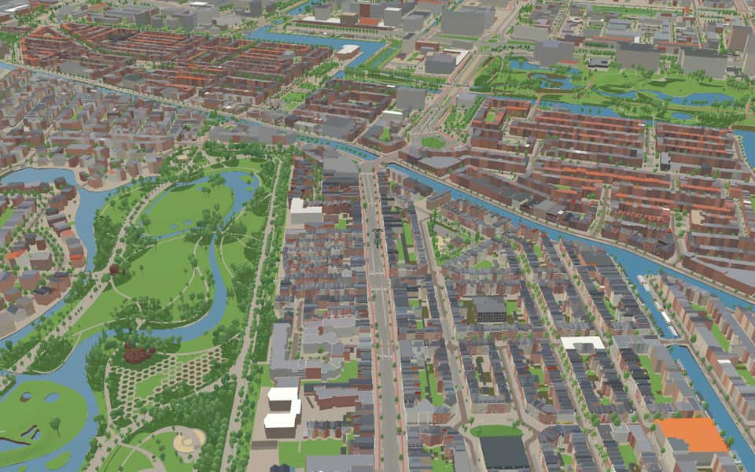
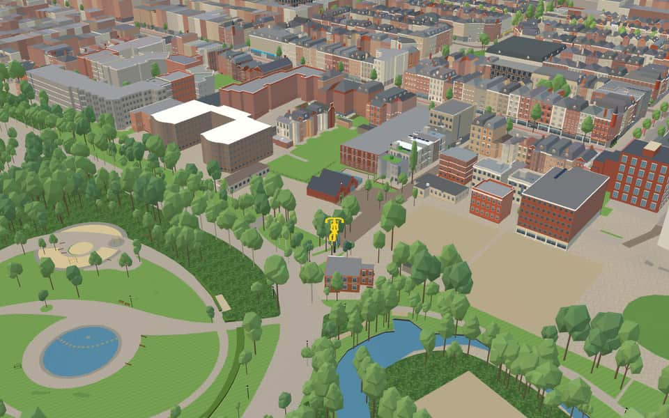
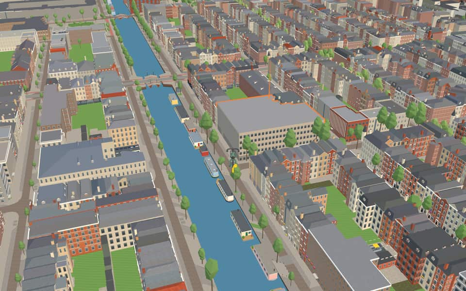
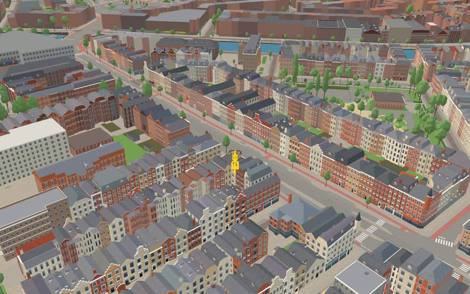

Quarter · Amsterdam
Overtoomse Sluis
The Overtoomse Sluis (bridge no. 199) crosses the Kostverlorenvaart, linking the Overtoom and Amstelveenseweg with the Surinameplein. The present bascule bridge, by Piet Kramer in the Amsterdam School style, was built in 1948. nl.wikipedia.org
The name. Named after the Overtoom and the Overtoom lock that once stood here. The street name Overtoom comes from the Overtoomse Vaart, the canal to the overtoom, filled in in 1904. nl.wikipedia.org
Ride Overtoomse Sluis1 modelled building · 15 facts · 25 name stories


In the game
Frames from a ride through Overtoomse Sluis.




6 more photos of Overtoomse Sluis


_01.jpg){kind=link}


.jpg){kind=link}
Built here
Buildings modelled one by one for the ride.
Kinderkookkafé
Did you know
Trivia the ride can show you here.
- In 1515 Amsterdam was allowed an ‘overtoom’ here, a slipway where small local boats were hauled over the dam. Wikipedia (translated from Dutch)
- The children's song ‘Schuitje varen, theetje drinken’ probably began on the Overtoom in the 18th century. Wikipedia (translated from Dutch)
- In 1809, in the Napoleonic era, the overtoom was replaced by a lock. Wikipedia (translated from Dutch)
- From 1345 the Overtoom was the Heiligeweg, the Holy Way, leading to the Miracle of Amsterdam. Wikipedia (translated from Dutch)
- The Zocherstraat honours Louis Paul Zocher, who designed the Vondelpark with his father Jan David Zocher. Wikipedia (translated from Dutch)
- VincentiuskerkArchitect Christianus Petrus Wilhelmus Dessing designed the neo-Gothic structure for this residential area. nl.wikipedia.org
- FrederiksstraatAmsterdam annexed the area in 1896 but allowed the name to remain since no other Frederiksstraat existed. nl.wikipedia.org
- FrederiksstraatFor a time, this street served as a reference point for defining the boundary of Zocherstraat. nl.wikipedia.org
- FrederiksstraatRevolutionary construction methods created a striking uniformity across almost all buildings on the street. nl.wikipedia.org
- FrederiksstraatThe largest building at this address is actually located on an internal site behind structures on the opposite side. nl.wikipedia.org
- OvertoomFrom 1345 until later times, this route was known as the Holy Way because it led to a miracle. nl.wikipedia.org
- OvertoomA section near Vondelkerk briefly bore the alternative name Vondelkade before reverting to its original title. nl.wikipedia.org
- ZocherstraatThe name was officially assigned while construction work on the street was already underway. nl.wikipedia.org
- ZocherstraatOther Dutch cities including Leiden, Rotterdam, and Haarlem also feature a Zocherstraat. nl.wikipedia.org
1 more fact
- ZocherstraatA slight bend near the Amstelveenseweg was engineered in 1918 to allow trams to enter the street. nl.wikipedia.org
Names on the map
Where the canal, bridge and street names come from.
Streets
- AmstelveensewegVillage. Before 1 January 1964 the municipality was called Nieuwer-Amstel. Before it was widened in 1898, the stretch of the road along the Vondelpark as far as the Overtoom was called Dubbele Buurt.
- BrederodestraatGerbrand A. Bredero (1585-1618), poet and playwright. His works include 'De Spaanse Brabander'.
- Busken HuetstraatCoenraad Busken Huet (1826-1886), a Walloon Church minister who from 1862 devoted himself to journalism and literature. A member of the editorial board of 'De Nieuwe Gids'.
- Derde KostverlorenkadeAfter the Kostverlorenwetering, dug in 1413 to give a shorter waterway to the Haarlem and Leiden lakes. According to some, the name Kostverloren (cost lost) comes from the heavy legal costs of this channel, which was a bone of contention between Amsterdam and Haarlem until 1609. The name Kostverloren occurs in several places in the Netherlands.
- Eerste HelmersstraatJan Frederik Helmers (1767-1813), Amsterdam broker who devoted himself to letters. His works include 'De Hollandsche Natie' (1813). The second part of the Eerste Helmersstraat lay in the municipality of Nieuwer-Amstel until 1896 and was then called Hofdijkstraat (council decision of Nieuwer-Amstel, 9 May 1890). The start of this street was originally a short side street of the Nassaukade called Sophiapark.
- FrederiksstraatAround 1880 Frederik Schröder provided a building loan for the houses along this street, which was then to be laid out, and so the street was named after him. The street was taken over from the municipality of Nieuwer-Amstel under this name.
- J.J. CremerpleinJacobus Johannes Cremer (1827-1880), man of letters, whose works include 'Fabriekskinderen' (factory children, a plea for child protection) and 'Overbetuwsche Novellen'.
- J.J. CremerstraatJacobus Johannes Cremer (1827-1880), man of letters, whose works include 'Fabriekskinderen' (factory children, a plea for child protection) and 'Overbetuwsche Novellen'.
- Jan Pieter HeijestraatAmsterdam physician and poet (1809-1876). He founded the Society for Nursing in 1844, was for thirty years director of Toonkunst, and promoted community singing. He wrote the popular children's songs 'De Zilvervloot' (the silver fleet), 'Kabels los' and 'Vlaggelied'.
- KanaalstraatThe kanaal (canal) meant here is the nearby Jacob van Lennepkanaal.
- KattenlaanThe origin and age of the name are unknown. The street came over under the same name from the municipality of Nieuwer-Amstel in 1896.
- OvertoomNamed after the overtoom (a dam over which boats were hauled) built in the Schinkel in the fourteenth century. Until it was filled in in 1904 the Overtoom was a canal, the Heiligewegse or Overtoomse vaart. The southern quay, as far as it lay in Amsterdam, was called Vondelkade (council decision of 29 September 1875). The north side (the quiet side) has always been called Overtoom.
13 more streets with a story
- Pieter LangendijkstraatMan of letters and playwright (1683-1756), whose works include 'Het wederzijds huwelijksbedrog' (mutual marriage deceit) and 'Krelis Louwen'. The street was first named without the first name (1900), but people sometimes corrupted that into Lange Dijkstraat.
- Reyer AnslostraatPoet (1625-1669), whose works include a poem in praise of Amsterdam for the laying of the first stone of the new city hall in 1648. Before 1896 the municipality of Nieuwer-Amstel called this street Parkstraat.
- Rhijnvis FeithstraatPoet (1753-1824), a great innovator in both his poetry and his plays, and much admired in his lifetime. His evangelical New Year's Eve hymn is well known: 'Uren, dagen, maanden, jaren, vliegen als een schaduw heen' (hours, days, months, years fly past like a shadow).
- RijtuigenhofThis court and its houses were laid out and built on a site occupied from 1910 to about 1980 by the buildings of the Amsterdamsche Rijtuig Maatschappij (carriage company).
- SaxenburgerdwarsstraatA former country estate, later a pottery, that stood here until 1879. The street came over under this name from the municipality of Nieuwer-Amstel.
- SaxenburgerstraatA former country estate, later a pottery, that stood here until 1879. The street came over under this name from the municipality of Nieuwer-Amstel.
- SchoolstraatAfter the old municipal school of Nieuwer-Amstel.
- StaringpleinAntoni Christiaan Winand Staring (1767-1840), poet of nature poetry, who lived at the castle De Wildenborch near Vorden.
- StaringstraatAntoni Christiaan Winand Staring (1767-1840), poet of nature poetry, who lived at the castle De Wildenborch near Vorden.
- VondelkerkstraatThe street was taken over under this name from the municipality of Nieuwer-Amstel. No naming decision by that municipality, or its reason, has been found. The Vondelkerk, built in 1873 to a design by Pierre Cuypers, is about a kilometre away and so cannot have been the reason for the name.
- VosmaerstraatCarel Vosmaer (1826-1888), writer and critic, clerk at the court in The Hague and then at the Supreme Court. Originally a classicist, he later supported the movement of the Tachtigers. His works include 'Nanno' and a translation of the Iliad and the Odyssey.
- WilhelminastraatWilhelmina Helena Pauline Maria, Princess of Orange-Nassau (1880-1962), daughter of King William III and Queen Emma, Queen of the Netherlands from 1898 to 1948.
- ZocherstraatLouis Paul Zocher (1820-1915), landscape architect, designer and builder of the Vondelpark (1864).